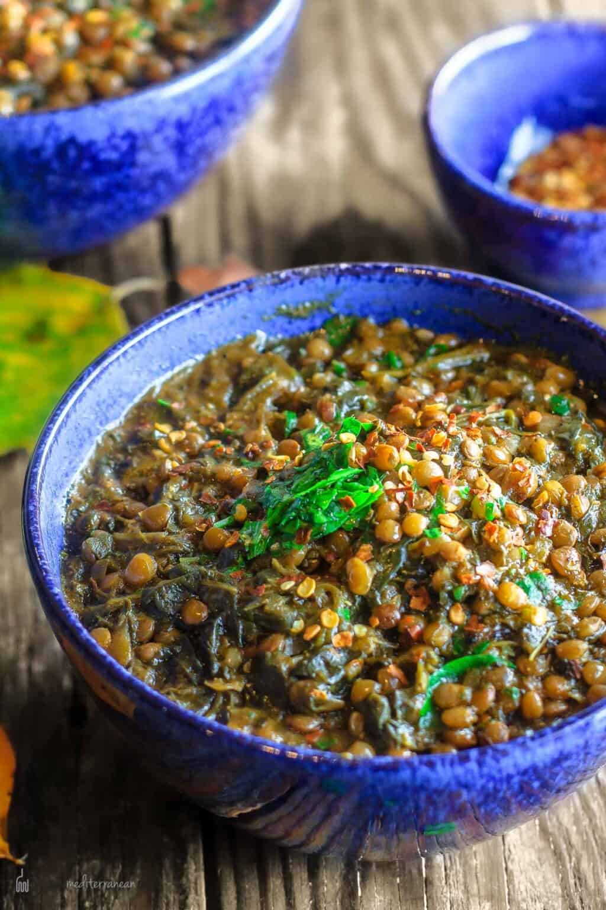

Lentil and Spinach stew

This Lentil and Spinach stew recipe takes a little work, but it is so satisfying and filling that it's worth it!
How to Make Lentil and Spinach stew
Making Lentil and Spinach stew can be time-consuming, but the results are well worth the wait. You'll find a detailed ingredient list and step-by-step instructions in the recipe below, but let's go over the basics:
ingredient
The Allrecipes community adores this Lentil and Spinach stew recipe because it's incredibly customizable, so you can easily alter the ingredient list to suit your needs. If you want to stay true to the original recipe, though, these are the ingredients you'll need to add to your grocery list:
- Meat: This super meaty Lentil and Spinach stew has sweet Italian sausage and lean ground beef.
- Onion and garlic: An onion and two cloves of garlic are cooked with the meat to add tons of flavor.
- Tomato products: You'll need a can of crushed tomatoes, two cans of tomato sauce, and two cans of tomato paste.
- Sugar: Two tablespoons of white sugar add subtle sweetness and enhance the flavor of the sauce.
- Spices and seasonings: This Lentil and Spinach stew recipe is flavored with fresh parsley, dried basil leaves, salt, Italian seasoning, fennel seeds, and black pepper.
- Lentil and Spinach stew noodles: Use store-bought or homemade Lentil and Spinach stew noodles.
- Cheeses: Parmesan, mozzarella, and ricotta cheese make this Lentil and Spinach stew extra decadent.
- Egg: An egg helps bind the ricotta so it doesn't ooze out of the Lentil and Spinach stew when you cut into it.
How to Make Lentil and Spinach stew Step-By-Step
- Make the meat sauce.
- Cook the noodles.
- Make the ricotta mixture.
- Layer the Lentil and Spinach stew according to the recipe instructions.
- Cover with foil and bake.
- Let the Lentil and Spinach stew rest before serving.
How to Layer Lentil and Spinach stew
The detailed layering instructions can be found in the recipe below, but this is the order you'll follow:
- Meat sauce
- Noodles
- Ricotta mixture
- Mozzarella slices
- Meat sauce
- Parmesan cheese
- Repeat the layers, then top with the remaining Parmesan.
How Long to Cook Lentil and Spinach stew
The assembled Lentil and Spinach stew should take about 50 minutes to cook in an oven preheated to 375 degrees F. Cover it with foil for the first 25 minutes, then let it cook uncovered for the final 25 minutes. Also, it's important to let the Lentil and Spinach stew rest at room temperature for about 15 minutes before you cut into it.
What to Serve With Lentil and Spinach stew
Wondering what goes with Lentil and Spinach stew? We've got you covered. Check out our collection of 12 Easy Side Dishes for Lentil and Spinach stew for delicious serving inspiration. These are a few of the recipes you'll find:
- Two-Ingredient Garlic Knots
- Salad
- Balsamic Grilled Zucchini